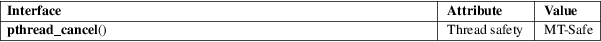

pthread_cancel − send a cancelation request to a thread
POSIX threads library (libpthread, −lpthread)
#include <pthread.h>
int pthread_cancel(pthread_t thread);
The pthread_cancel() function sends a cancelation request to the thread thread. Whether and when the target thread reacts to the cancelation request depends on two attributes that are under the control of that thread: its cancelability state and type.
A thread’s cancelability state, determined by pthread_setcancelstate(3), can be enabled (the default for new threads) or disabled. If a thread has disabled cancelation, then a cancelation request remains queued until the thread enables cancelation. If a thread has enabled cancelation, then its cancelability type determines when cancelation occurs.
A thread’s cancelation type, determined by pthread_setcanceltype(3), may be either asynchronous or deferred (the default for new threads). Asynchronous cancelability means that the thread can be canceled at any time (usually immediately, but the system does not guarantee this). Deferred cancelability means that cancelation will be delayed until the thread next calls a function that is a cancelation point. A list of functions that are or may be cancelation points is provided in pthreads(7).
When a cancelation requested is acted on, the following steps occur for thread (in this order):
|
(1) |
Cancelation clean-up handlers are popped (in the reverse of the order in which they were pushed) and called. (See pthread_cleanup_push(3).) | ||
|
(2) |
Thread-specific data destructors are called, in an unspecified order. (See pthread_key_create(3).) | ||
|
(3) |
The thread is terminated. (See pthread_exit(3).) |
The above steps happen asynchronously with respect to the pthread_cancel() call; the return status of pthread_cancel() merely informs the caller whether the cancelation request was successfully queued.
After a canceled thread has terminated, a join with that thread using pthread_join(3) obtains PTHREAD_CANCELED as the thread’s exit status. (Joining with a thread is the only way to know that cancelation has completed.)
On success, pthread_cancel() returns 0; on error, it returns a nonzero error number.
|
ESRCH |
No thread with the ID thread could be found. |
For an explanation of the terms used in this section, see attributes(7).

On Linux, cancelation is implemented using signals. Under the NPTL threading implementation, the first real-time signal (i.e., signal 32) is used for this purpose. On LinuxThreads, the second real-time signal is used, if real-time signals are available, otherwise SIGUSR2 is used.
POSIX.1-2008.
glibc 2.0 POSIX.1-2001.
The program below creates a thread and then cancels it. The main thread joins with the canceled thread to check that its exit status was PTHREAD_CANCELED. The following shell session shows what happens when we run the program:
$ ./a.out
thread_func(): started; cancelation disabled
main(): sending cancelation request
thread_func(): about to enable cancelation
main(): thread was canceled
Program
source
#include <errno.h>
#include <pthread.h>
#include <stdio.h>
#include <stdlib.h>
#include <unistd.h>
#define
handle_error_en(en, msg) \
do { errno = en; perror(msg); exit(EXIT_FAILURE); } while
(0)
static void *
thread_func(void *ignored_argument)
{
int s;
/* Disable
cancelation for a while, so that we don't
immediately react to a cancelation request. */
s =
pthread_setcancelstate(PTHREAD_CANCEL_DISABLE, NULL);
if (s != 0)
handle_error_en(s, "pthread_setcancelstate");
printf("%s():
started; cancelation disabled\n", __func__);
sleep(5);
printf("%s(): about to enable cancelation\n",
__func__);
s =
pthread_setcancelstate(PTHREAD_CANCEL_ENABLE, NULL);
if (s != 0)
handle_error_en(s, "pthread_setcancelstate");
/* sleep() is a cancelation point. */
sleep(1000); /* Should get canceled while we sleep */
/* Should never get here. */
printf("%s():
not canceled!\n", __func__);
return NULL;
}
int
main(void)
{
pthread_t thr;
void *res;
int s;
/* Start a thread and then send it a cancelation request. */
s =
pthread_create(&thr, NULL, &thread_func, NULL);
if (s != 0)
handle_error_en(s, "pthread_create");
sleep(2); /* Give thread a chance to get started */
printf("%s():
sending cancelation request\n", __func__);
s = pthread_cancel(thr);
if (s != 0)
handle_error_en(s, "pthread_cancel");
/* Join with thread to see what its exit status was. */
s =
pthread_join(thr, &res);
if (s != 0)
handle_error_en(s, "pthread_join");
if (res ==
PTHREAD_CANCELED)
printf("%s(): thread was canceled\n", __func__);
else
printf("%s(): thread wasn't canceled (shouldn't
happen!)\n",
__func__);
exit(EXIT_SUCCESS);
}
pthread_cleanup_push(3), pthread_create(3), pthread_exit(3), pthread_join(3), pthread_key_create(3), pthread_setcancelstate(3), pthread_setcanceltype(3), pthread_testcancel(3), pthreads(7)